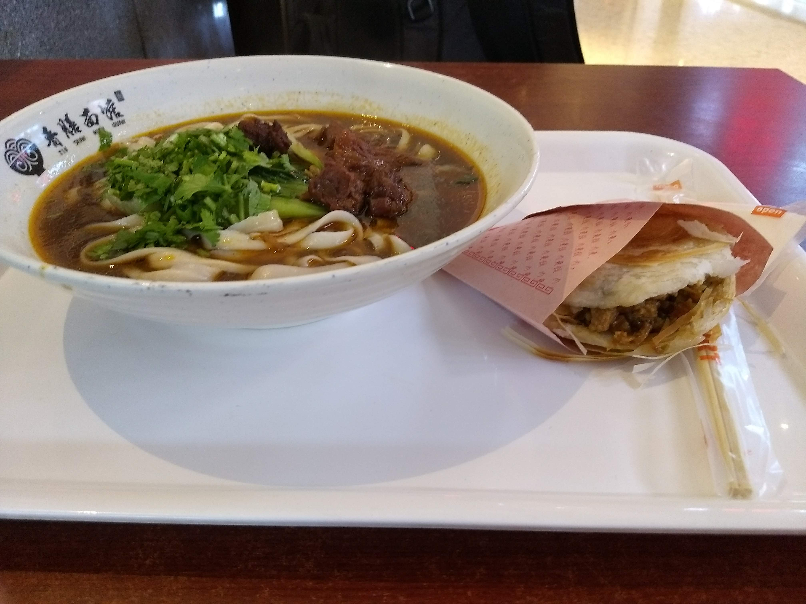
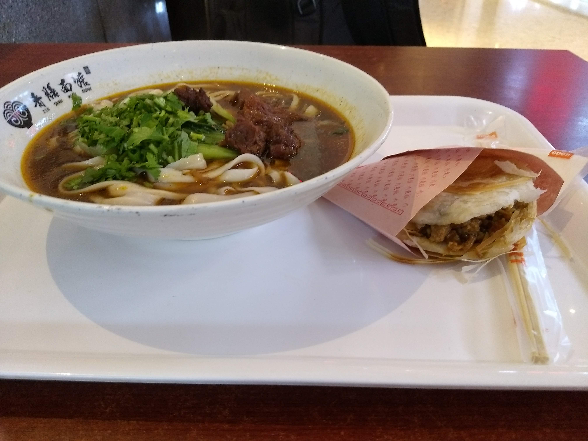

About Me
Howdy! My name is Joshua Yan.
I'm a junior computer engineering major at Texas A&M University. I'm a hardworking, dependable student and worker who will always try my best to get the job done.
I've loved building things ever since I was a kid. What started with building Lego sets has led to my current path of being an Aggie engineer, although I still enjoy the occasional Lego set these days. I've had a solid foundation in STEM that began in middle school, where I took my first technology class; I took many STEM classes throughout my middle and high school years and learned skills ranging from Java programming to statistics to AutoDesk. However, I still made sure to keep a well rounded foundation. I very much enjoyed my humanities and AP history classes, learning about the people and events of times past and other cultures of the world. I was also involved in marching and concert band, participated in my school's award winning quiz bowl team, dabbled in hip hop dancing, and volunteered frequently as a member of the National Honor Society. I chose to come to Texas A&M as a college sponsored National Merit Scholar due to the strong engineering program. At my almost 3 years as an engineering student at A&M, I've been exposed to many different aspects of computer engineering; I've designed and tested components via Verilog, worked with assembly language, conducted physics experiments in the realms of mechanics and electricity and magnetism, painstakingly wired circuits, and coded many cool programs in C++, such as data structures and inter-process communication. Thanks to my education here, I will be working as a design verification intern at Hewlett Packard Enterprise (HPE) for the summer of 2023, and I can't wait to see where my journey takes me next!
Here are some fun facts about me:
- Although I consider myself a Texan, I was born in Boise, Idaho.
- I like to dance! I started in high school and currently am an officer for a breakdancing and hip hop club at A&M.
- I'm a fan of the Dallas Mavericks, and I've been to many games; witnessing a Dirk Nowitzki game winner in person was a core memory of mine.
- I have a Shiba-Inu Chihuaha mix named Trooper.
- I love trying new foods; one of my favorite parts of my Chinese heritage is the cuisine, and I love seeing what other cultures have to offer.
 

Contact me at wsjoshua02@gmail.com, and feel free to check out what I've done, some things I've made, and even what I listen and jam out to!